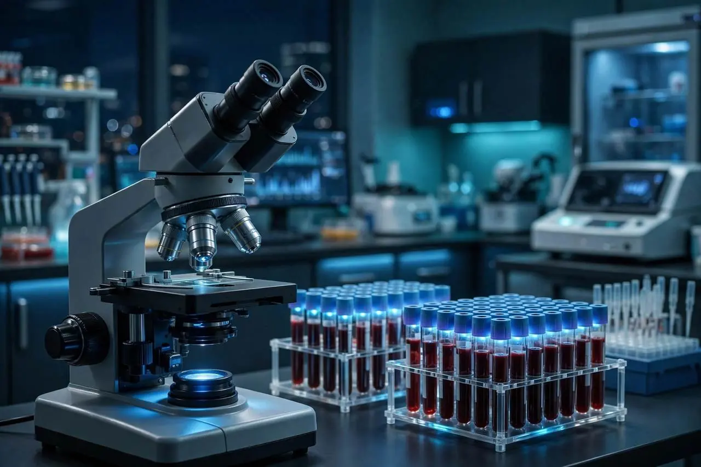

Postbiotic metabolites vs human NK1R
Docking of 52 gut-derived metabolites and 4 approved antagonists into NK1R (PDB 6HLO); urolithin B identified as a lead candidate; 100 ns MD with MM-PBSA validation.
Read moreMedical Laboratory Scientist | Computational Biomedical Researcher
BMLS graduate · University of Lahore Drug discovery for the gut-brain axis, computed from docking to dynamics. First-Author Publication Invited Peer Reviewer (PJBB) GSN Verified Fellow In Silico Drug Discovery Molecular Dynamics Simulation Clinical Diagnostics

About
Medical Laboratory Science graduate (BMLS, University of Lahore, 2026) with hands-on diagnostic experience in hematology, clinical chemistry, microbiology and urinalysis, combined with research training in computational structural biology.
My final-year thesis applied molecular docking, density functional theory and molecular dynamics to the human neurokinin-1 receptor (NK1R) for anxiety and stress disorders, and I co-authored a peer-reviewed review article on gene therapy for childhood leukemia.
I am currently seeking Graduate Research Assistantships (GRA) or fully funded M.S. opportunities (Fall 2027) in Neuroscience, Neuropharmacology, Molecular Medicine or Related Discipline, where I can contribute my computational and clinical skill sets to translational research.
Research
From in silico drug discovery to peer-reviewed publication.
Docking of 52 gut-derived metabolites and 4 approved antagonists into NK1R (PDB 6HLO); urolithin B identified as a lead candidate; 100 ns MD with MM-PBSA validation.
Read moreReview article in the Pakistan Journal of Biochemistry and Biotechnology, 7(1): 65-79, on current progress and future directions.
Read moreUTI diagnostics: urine microscopy vs bacterial culture (submitted). Early diagnostic approaches for dengue virus infection (in preparation).
Read more

BMLS graduate from the University of Lahore, working across two worlds: the clinical laboratory bench and computational structural biology.
My thesis docked 52 gut-derived metabolites against the human NK1R receptor and validated the leads with 100 ns molecular dynamics simulations. Computational precision, grounded in real diagnostic experience.
See the full resumeCertificates
Every certificate is shown as a verified image and available for download.
FAQ
Muhammad Zain Ul Abideen is a Medical Laboratory Scientist and computational biology researcher from Lahore, Pakistan. He earned his BS in Medical Laboratory Sciences from The University of Lahore in June 2026.
His final-year thesis studied gut-derived postbiotic metabolites against the human neurokinin-1 receptor (NK1R), a gut-brain axis target in stress and anxiety biology. He screened 52 metabolites with molecular docking (AutoDock Vina) and validated the top complexes with 100 ns molecular dynamics simulations.
He is the first author of “Gene Therapy Approaches for Treating Childhood Leukemia: Current Progress and Future Directions” (Pakistan Journal of Biochemistry and Biotechnology, 7(1): 65-79, 2026), and he has served as a peer reviewer for the same journal.
He has worked as a Medical Laboratory Technologist at Al Rehman Clinical Laboratory and completed hospital laboratory internships, covering hematology, biochemistry and microbiology diagnostics. He holds BLS/CPR certification valid to July 2027.
Yes. He is seeking a fully funded MS by Research position and research collaborations in computational biology, molecular modeling and laboratory medicine. Email or WhatsApp is the fastest way to reach him.
Email: zkhantagga@gmail.com. Phone and WhatsApp: +92 330 2361100. ORCID: 0009-0004-1508-3088. Or use the contact page on this website.
Seeking a fully funded Master's by research or a research placement in neuroscience, neuropharmacology, molecular medicine or biomedical sciences.